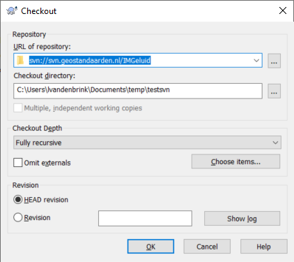
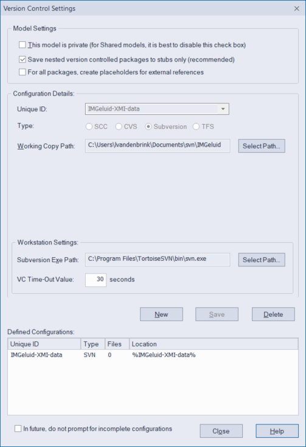
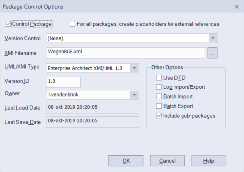

Subversion
Subversion is een versiebeheersysteem vergelijkbaar met GitHub. Echter binnen de UML modelleertool Enterprise Architect kun je GitHub niet gebruiken dus gebruiken we daar Subversion.
Installeren van Subversion in Enterprise Architect
Wanneer een UML model in subversion beheerd is dan kun je deze als volgt op je eigen computer gebruiken. - Installeer een SVN client tool waar een command line verise bij zit - Installeer sliksvn - Vroeger was het advies om tortoiseSVN te installeren (https://tortoisesvn.net). Deze bevat geen command line variant meer maar nog wel een mooie GUI die in de instructies hieronder gebruikt wordt. - Zorg voor een Geonovum svn account. Dit kun je aanvragen bij Wilko Quak of als hij niet beschikbaar is rechtstreeks bij Rob Kaesehagen die de server beheert. - Voor projectX die gebruik maakt van de subversion map svn.geostandaarden.nl/ProjectX: - Maak een folder op je lokale systeem: WerkmapProjectX - Maak een subfolder svn. - Maak een nieuw EA project ProjectX.eapx in je werkmap. - Klik met je rechtermuistoets op deze folder en kies SVN Checkout - Er verschijnt een Checkout dialoog. Vul als URL in svn://svn.geostandaarden.nl/IMGeluid en als output directory de folder die je net hebt aangemaakt. Kies de settings zoals hieronder weergegeven:

- Configureer version control in EA
- Kies uit het menu (de ribbon bovenin EA) Configure > Settings. Het Version Control Settings dialoogvenster verschijnt. Vul dit zoals hieronder in en klik dan op Save.

- Breng nu elk van de packages, op het niveau waarop je ze wilt kunnen in- en uitchecken, onder versiebeheer.
- Selecteer het tabblad Configure (bovenin) en klik op Package Configuration)
- Vul het Package Control Options dialoog in zoals hieronder (XMI Filename kan anders zijn, afhankelijk van hoe de packages zijn ingedeeld) en klik OK.
- Selecteer bij Version Control het voorgestelde path
- Kies ‘Include sub-packages’ als je wilt dat alle sub-packages in hetzelfde XMI bestand beheerd worden en dus geen eigen slotje krijgen.

- Elk van de packages die in SVN zijn ondergebracht, hebben nu in EA een slotje. Je kunt de inhoud van het model dat in zo'n package staat niet zomaar meer wijzigen.

-
Om aan een package te werken, check je het eerst uit. Klik met de rechtermuistoets op het package, kies Package Control > Check Out… (gebruik NIET "check out branch", dat is om met parallelle versies te werken, doen wij niet). Subversion haalt nu de laatste versie van het package voor je op en haalt het slotje voor je eraf. Een ander persoon kan niet tegelijkertijd aan dit package werken, maar het wel bekijken.
-
Als je klaar bent met je werk, of je stopt er voor vandaag mee, check je het package weer in. Klik met de rechtermuistoets op het package, kies Package Control > Check In… (gebruik NIET "check in branch", dat is om met parallelle versies te werken, doen wij niet).
-
Andere handige commando's:
-
Put Latest > Tussentijds wijzigingen naar de SVN server sturen
-
Get Latest > Laatste wijzigingen van de SVN server ophalen zodat je ze kan zien, zonder te willen uitchecken.
-